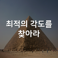
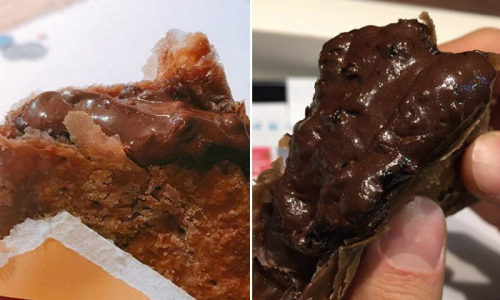

mark와 time 요소
2장. - 최적의 각도를 찾아라
내용은 다음과 같습니다. -고대 이집트인들은 시키드(seked)라는 특별한 각도를 사용했다. -시키드는 현대 삼각함수의 코탄젠트(cotangent)와 그 값이 같다. 삼각함수와 코탄젠트라는 단어에 멈칫했을 수도 있지만, 이것을...
공유 0 · 댓글 0 · by sortie기준선의 아래, 다른 글자의 오른쪽에 놓이는 작은 글자. 대부분 화학식이나 수학식에 사용된다.
H2SO4황산은 강산성의 액체 화합물이다. 중국과 일본에서는 유황의 산이라 하여 硫酸이라고 하며, 북한에서도 류산이라고 한다. 우리나라에서도 유산이라는 말을 쓰기도 하지만 젖산을 뜻하는 유산과 착각할 수 있으므로 황산을 사용한다. 물을 제외하고는 가장 많이 제조되며, 많은 곳에 사용된다. 2001년의 세계 황산 생산량은 1억 65백만 톤에 달한다. 비료 제조, 광석 처리, 폐수 처리, 석유 정제 등에 사용된다. 위키백과
다른 글자의 오른쪽 위에 놓이는 작은 글자. 때때로 약어에서, 그리고 각주[1]를 나타낼 때도 사용된다.
내용은 다음과 같습니다. -고대 이집트인들은 시키드(seked)라는 특별한 각도를 사용했다. -시키드는 현대 삼각함수의 코탄젠트(cotangent)와 그 값이 같다. 삼각함수와 코탄젠트라는 단어에 멈칫했을 수도 있지만, 이것을...
공유 0 · 댓글 0 · by sortie뉴스팀 입력 댓글 0 
정상 가격 11,900원
50%할인 가격
판매가격 5,900원
[1] 각주(脚註, 영어: note)는 본문에 대한 참조 문헌이나 본문의 낱말, 문장 등의 뜻을 알기 쉽게 풀이하는 덧붙이는 글이다.